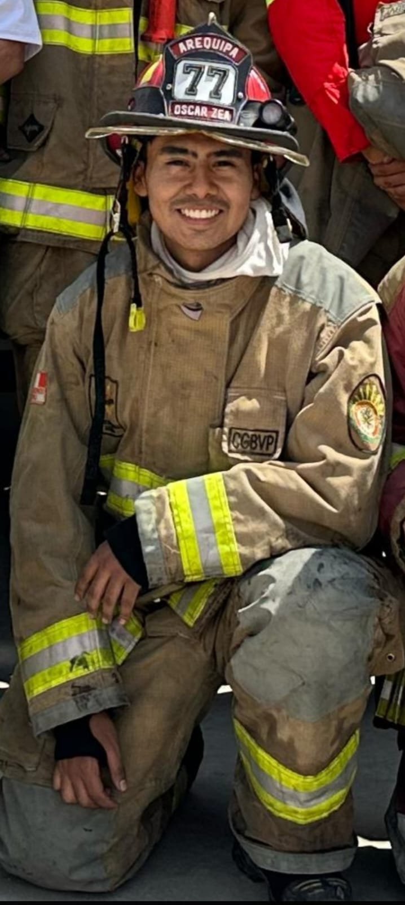

📠Sobre mÃ
Soy un joven de 21 años que estudia Administración de Negocios en la Universidad Católica San Pablo. Me apasiona servir a los demás, por eso también soy bombero voluntario. Me gusta trabajar en equipo, organizar y liderar.
🫠Universidad
Estudio en la Universidad Católica San Pablo, ubicada en Arequipa, Perú.
Carrera: Administración de Negocios
Ver más sobre la carrera🔥 Actividades
- Bombero Voluntario
- Organizador de eventos
- Trabajo comunitario
- Liderazgo juvenil
👨‍🏫 Docentes
🤠Compañeros
📬 Contacto

“Sigo vivo gracias a la música”